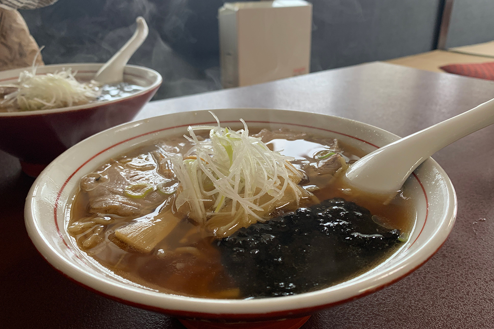
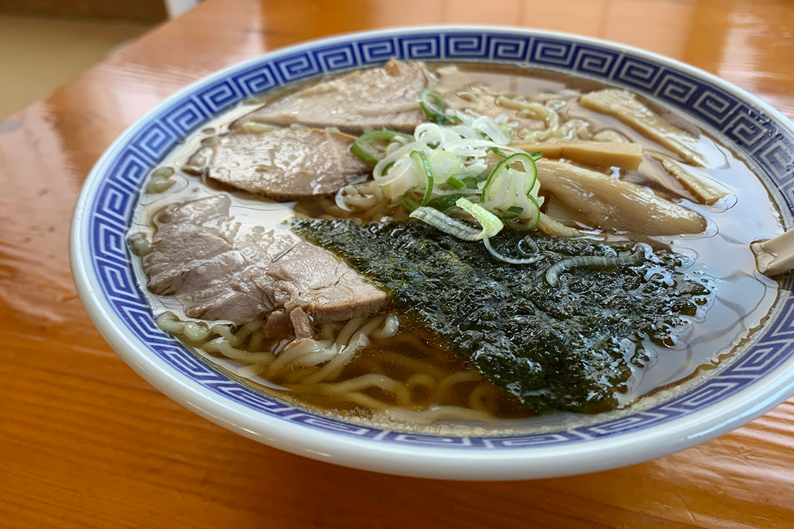
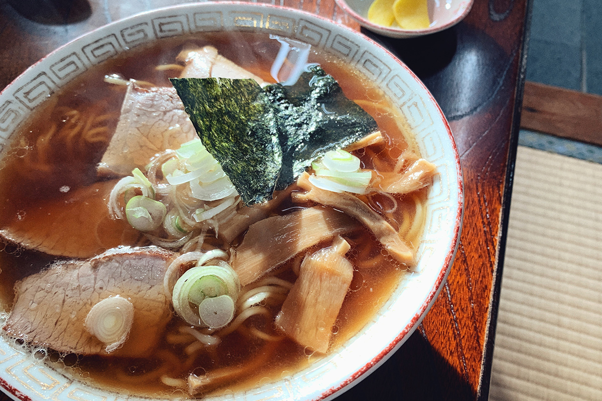

Префектура Ямагата · Цуруока · еда
Тюка-соба в закусочных Цуруоки: три старые сёкудо с лапшой на рыбном бульоне

Цуруоку знают как гастрономическую столицу, но кулинар и писатель, вернувшийся в родной город, советует начать с другого. Его выбор: тюка-соба в старых городских закусочных, где лапшу едят целыми семьями.
Город
Обратная сторона гастрономической столицы
Цуруока лежит на побережье Японского моря, в равнине Сёнай на западе префектуры Ямагата. Суровые зимы и щедрая природа сложили здесь собственную духовную культуру, и с ней тесно связана местная еда. ЮНЕСКО включила Цуруоку в сеть творческих городов гастрономии, и о здешней кухне можно рассказывать бесконечно: у неё много слоёв.
Кулинар и писатель, выросший в Цуруоке и вернувшийся в родной город, где он держит кафе-галерею, предлагает взглянуть на её «вторую сторону пластинки». Это тюка-соба, китайская лапша в бульоне, какую подают в обычных городских сёкудо, недорогих закусочных на каждый день.
Сёнай вообще славится лёгкой лапшой на бульоне из рыбы и морепродуктов. Сюда специально едут любители рамэна, и знаменитых лапшичных в округе немало, но тюка-соба в старых закусочных любят ничуть не меньше. Её история начинается в первые годы эпохи Сёва, начавшейся в 1926 году: рецепт принесли китайцы, переехавшие сюда из китайских кварталов Токио и Иокогамы. Чтобы отличить новую лапшу от японской соба из гречки, её называли «сина-соба» или «тюка-соба», то есть «китайская соба». В Ямагате и без того любили соба, поэтому новое блюдо быстро прижилось в лапшичных и простых закусочных и стало частью повседневной жизни.
Ояма
«Ироха сёкудо»: лапша из лапшичной

«Ироха сёкудо» стоит в районе Ояма, где много сакэварен, и это закусочная той самой старой линии. Начиналась она как лапшичная с гречневой соба, а тюка-соба подаёт уже больше 70 лет. Всю лапшу здесь делают сами: и соба, и тюка-соба, и «мугикири», холодную пшеничную лапшу, которую едят только в Цуруоке.
Бульон для тюка-соба собирают из восьми с лишним видов рыбы и морепродуктов, а за основу берут «каэси», соевую заправку для гречневой соба. Он получается лёгким и сладковатым, с глубоким вкусом, к которому хочется возвращаться. В зале больше 80 мест, и когда над всеми мисками разом поднимается пар, зрелище впечатляет.
«Ироха сёкудо»
- Адрес
- префектура Ямагата, Цуруока, Томоэ-мати, 20-25
- Часы работы
- 11:00–15:00, до окончания лапши
- Выходные
- четверг, вторая среда месяца
Классика
«Ходаси сёкудо»: в меню одна лапша
Вывеска обещает закусочную, а в меню только тюка-соба. Этой прямотой и привлекает «Ходаси сёкудо» в деревне Ходаси, на границе Цуруоки и посёлка Микава. Бульон на рыбе с добавкой куриного, слегка вьющаяся лапша и вкус, который каждому кажется знакомым с детства. В зале играет радио, а на кухне управляются одни женщины.

«Ходаси сёкудо»
- Адрес
- префектура Ямагата, Цуруока, Ходаси, Мураноути, 97
- Телефон
- +81 235-29-2798
- Часы работы
- с ноября по апрель 11:00–15:30, с мая по октябрь 11:00–16:00
- Выходные
- среда
Кусибики
«Тасиро сёкудо»: очередь до открытия
Женская команда работает и в «Тасиро сёкудо», на возвышенности в районе Кусибики. Закусочная работает с середины 1970-х или начала 1980-х годов. Из центра Цуруоки сюда ехать на машине около 20 минут, место не самое удобное, но гости ждут ещё до открытия, и около 40 мест в зале заполняются почти сразу.
Бульон варят из «якибоси», жареной и высушенной рыбы, с куриными и свиными костями. Он прозрачный и лёгкий, но с насыщенным рыбным вкусом. К нему подают лапшу, которую мнут вручную, и чашу из мягкой свиной грудинки, и из-за стола встаёшь сытым и очень довольным.
«Тасиро сёкудо»
- Адрес
- префектура Ямагата, Цуруока, Тасиро, Осакаяма, 309
- Телефон
- +81 235-57-4614
- Часы работы
- 11:00–14:00, до окончания лапши
- Выходные
- вторник, среда
Вкус
Миска для снежного края
У всех трёх закусочных лёгкий вкус с едва уловимым привкусом моря, и он не надоедает. Сюда часто приходят целыми семьями. В Сёнае много снега и часто штормит, и миска горячей лапши, которая согревает в такую погоду, вросла в жизнь Цуруоки не случайно. Тюка-соба старых закусочных здесь не выходит из моды, и попробовать её стоит именно в Цуруоке.